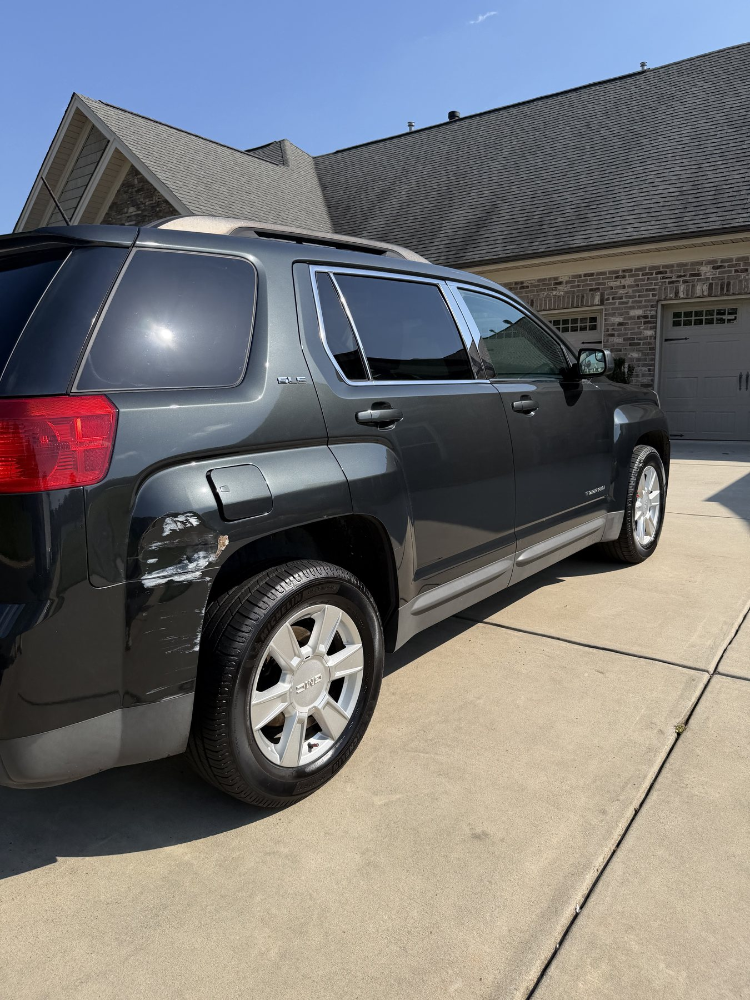

We come to you
Full Car Detailing in Winston-Salem & the Piedmont Triad
Get an inside-and-out cleanup at your home or workplace with 1018 Mobile Detailing. Full Detail starts at $150 for standard-size vehicles in average condition.

What the Full Detail Includes
- Exterior hand wash and careful dry
- Wheels and tires cleaned with a natural matte finish
- Interior vacuum, including the trunk when accessible
- Dashboard, console, doors and plastic surfaces cleaned
- Floor mats and door jambs cleaned
- Windows cleaned inside and out
Choose the Right Level of Cleaning
The routine Full Detail is designed for normal daily-use vehicles. Seat or carpet extraction, heavy pet hair, stains, odors and excessive buildup are priced separately. Larger vehicles and unusually time-consuming work need a tailored quote.
For deeper cleaning and paint enhancement, ask about our custom-quoted Premium Detail. Its advertised services include iron removal, clay-bar decontamination, single-step machine polishing, wax and extraction where appropriate. Multi-step correction and severe restoration work are separate quotes.
Common Questions
Does the $150 full detail include seat extraction?
No. Seat and carpet extraction are separately priced for the routine Full Detail. Send condition photos so we can recommend a package and give an accurate quote.
Where can you detail my car?
We travel to homes and workplaces in Winston-Salem, Greensboro, High Point and surrounding Triad communities by arrangement. Send your location so we can confirm coverage and access requirements.
Book Your First or Next Visit
Already a customer? Text your name, vehicle or property details, town and preferred date. Ask about scheduling your next service. A request is not a confirmed appointment; we will agree on the work, price and availability first.